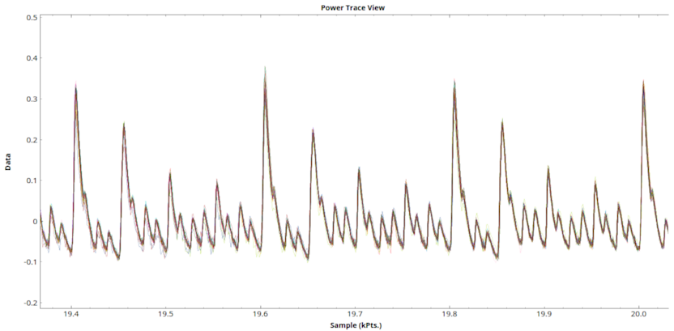
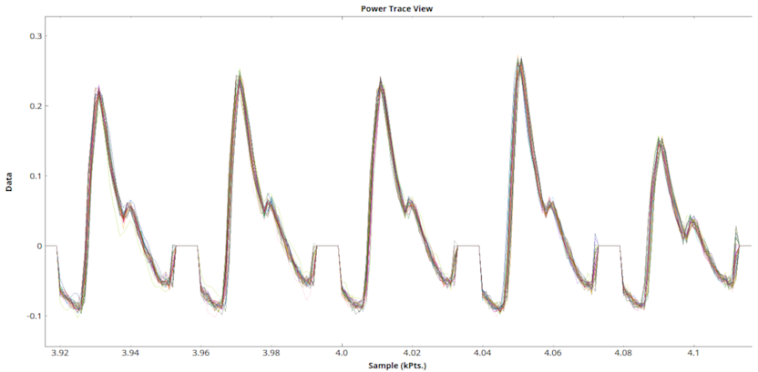
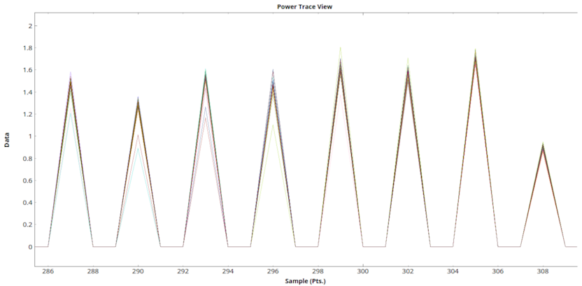
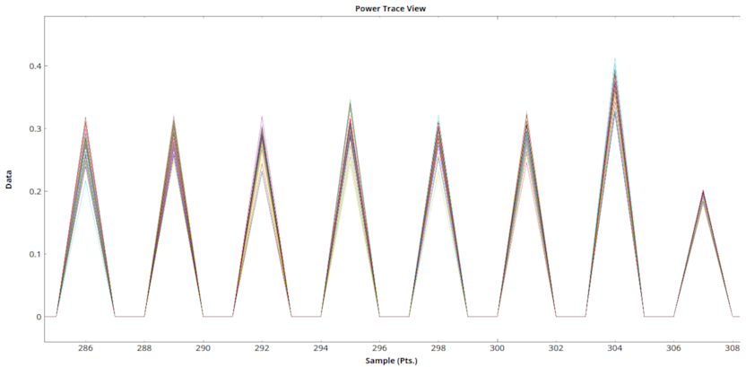

This collection of traces is part of the Keeloq toolset and complements the tutorials. It can also be used as starting point for new studies.
Useful to study trace preparation and synchronization.
Captured with the ChipWhisperer CW1002 hardware kit using a GND shunt. The chip is the SOIC-8 variant.
TODO: add file download
Useful to study any aspect of the power behavior.
Derived from HCS301 raw, with clock drift compensated and freaks removed.
TODO: specify how many rounds are covered
Download HCS301 sync:

Useful to study bit model attacks.
Derived from HCS301 sync, trimmed to just the point range where MSB/LSB bit values leak. Each round is zero-padded for visual guidance.
Download HCS301 bits full:

Download HCS301 bits peak:

Useful to study Hamming distance attacks.
Derived from HCS301 sync, trimmed to just the point range where the status register leaks. Each round is zero-padded for visual guidance.
TODO: add HCS301 shift full
Download HCS301 shift peak:

¹ semi-consecutive:
Only every other generated message was captured, and some of them were discarded afterwards. All messages are from the same device, the internal counter is increasing, the step size is small, but it is not 1.
Document author: marc - Document version: 13-Oct-2016 - Fork README - Keeloq README